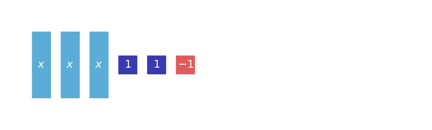

1.4 · Expressions and Structure
Rewriting an expression should reveal structure without changing its value.
Learning Target
Students will interpret and rewrite algebraic expressions by identifying structure, meaning, and equivalent forms.
- I can build equivalent expressions by using structure, grouping, and properties of operations.
- I can apply rewriting strategies to make the meaning of an expression easier to work with.
- I can determine whether two expressions are equivalent by using structure, substitution, or properties.
Vocabulary / Key Notation Preview
term, coefficient, factor, equivalent expression, distributive property
Sort the vocabulary. Write each vocabulary word in the column that best matches what you know right now. You may move a word later.
| Know for sure | Recognize | Don't know yet |
|---|---|---|
What's to Come

- Write an expression for the tiles.
- How could you group like tiles without changing the value?
- Imagine two identical copies of the entire tile set. Write one expression with parentheses and one without.
- Explain why the two expressions from part 3 are equivalent.
Let's Get Started
Skim the section. Record what catches your attention before you read closely.
| What I noticed | |
|---|---|
| What I predict | |
| What I wonder |
I can build equivalent expressions by using structure, grouping, and properties of operations.
An algebraic expression is built from pieces. A term is a quantity separated by addition or subtraction at the outer level of the expression. A coefficient is a numerical factor multiplying a variable. Seeing those pieces helps you decide what can be combined and what must remain separate.
Like terms have the same variable part, so their coefficients can be combined. For example, $5x+2x$ becomes $7x$, while $5x+2$ cannot be combined into $7x$ because the terms represent different kinds of quantities.
An equivalent expression may look different but has the same value for every allowed input. Grouping and properties of operations let us reorganize an expression without changing what it represents.
- What makes two variable terms like terms?
- Why can $5x$ and $2$ not be combined as like terms?
- What must remain true when an expression is rewritten equivalently?
Example 1: Combine Like Terms
In $5x-3+2x+8$, identify the terms and coefficients, then rewrite the expression by combining like terms.
You Try It 1: Combine Like Terms
Identify terms and coefficients in $7y+4-3y-9$, then combine like terms.
Example 2: Connect an Area Model

Use the area model to explain why a product form and a sum of partial areas can be equivalent.
You Try It 2: Connect an Area Model
Use the distributive property to write an equivalent expanded form of $5(x+2)$ and connect each term to a partial product.
I can apply rewriting strategies to make the meaning of an expression easier to work with.
A factor is a quantity being multiplied. The distributive property connects multiplication across a sum: $a(b+c)=ab+ac$. An area model makes the reason visible—the total rectangle can be found as one product or as the sum of partial areas.
Distribution and factoring are reverse ways of viewing the same structure. Expanding $4(2x-3)$ gives $8x-12$. Factoring $12x+18$ by the greatest common factor gives $6(2x+3)$. Both rewrites preserve value while emphasizing different features.
Choose a form that makes the next step easier to see. Expanded form can make like terms visible. Factored form can highlight a common multiplier. A context may make one form more meaningful because it groups quantities according to how they occur in the situation.
- What two partial products come from $4(2x-3)$?
- How are distributing and factoring related?
- Why might two equivalent forms be useful for different purposes?
Example 3: Distribute and Simplify
Rewrite $4(2x-3)+5$ without parentheses.
You Try It 3: Distribute and Simplify
Rewrite $-3(2x+5)+4x$ without parentheses and simplify.
Example 4: Factor a Common Factor
Factor the greatest common factor from $12x+18$ and explain what the factored form makes easier to see.
You Try It 4: Factor a Common Factor
Factor the greatest common factor from $15x-20$.
Example 5: Interpret Equivalent Context Forms
A rectangle has length $x+5$ and width 3. Write its perimeter in two equivalent forms and explain what each form emphasizes.
You Try It 5: Interpret Equivalent Context Forms
A gym charges an enrollment amount $e$ plus 12 dollars for each class. Write an expression for 5 classes in two equivalent forms if the enrollment is split equally across two family members.
I can determine whether two expressions are equivalent by using structure, substitution, or properties.
To determine whether two expressions are equivalent, structural reasoning is the strongest evidence when it shows one can be transformed into the other using valid properties. For example, $2(x+3)$ is equivalent to $2x+6$ by the distributive property.
Substitution can support a check: choose an input and compare the two values. If the values are different for even one allowed input, the expressions are definitely not equivalent. Matching at a few inputs, however, does not by itself prove equivalence for every input.
Tables are useful evidence because they make comparisons easy to see, but the goal is to connect the numerical pattern back to algebraic structure. A convincing explanation often says both what the table shows and which property explains why the match should continue.
- What kind of algebraic evidence can prove $2(x+3)$ and $2x+6$ are equivalent?
- What does one substitution mismatch prove?
- Why do several matching test values alone not guarantee equivalence for every possible input?
Example 6: Check Equivalence
| x | $2(x+3)$ | $2x+6$ |
|---|---|---|
| -2 | 2 | 2 |
| 0 | 6 | 6 |
| 4 | 14 | 14 |
Use the table and algebraic structure to determine whether the two expressions are equivalent.
You Try It 6: Check Equivalence
| x | $3x+9$ | $3(x+3)$ |
|---|---|---|
| -1 | 6 | 6 |
| 2 | 15 | 15 |
| 5 | 24 | 24 |
Are the expressions equivalent? Support with structure or the table.
Summary
- Identify terms, coefficients, factors, and grouped structure before rewriting.
- Use properties such as distribution, combining like terms, and factoring to create equivalent forms.
- Use structural reasoning for general equivalence; substitution is a useful check and one mismatch is a decisive counterexample.
Common Mistakes
- Combining unlike terms as though they were like terms.
- Distributing a factor to only one term or changing the value while rewriting.